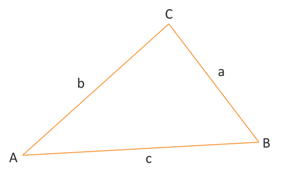

Laws of Sines & Cosines
Trigonometric Equations
Trigonometric Equations
Let's restate the law of cosines and then look at some examples of solving triangles and applications using the law of cosines.
Law of Cosines: Given triangle ABC with opposite sides a, b, and c, respectively, the following equations are true.
\[\begin{align*} c^2 &= a^2 + b^2 - 2ab\cos{C} \\ b^2 &= a^2 + c^2 - 2ac\cos{B} \\ a^2 &= b^2 + c^2 - 2bc\cos{A} \end{align*}\]In situations where we are given two sides and the angle between them, we can use the law of cosines to find the 3rd side. If we know all 3 sides, then we can use the law of cosines and the inverse cosine function to find any missing angles. Once you have two angles, remember that all 3 angles add up to 180°.
Just a couple things to be aware of when using the law of cosines. First, the likeliness of making an algebraic mistake increases a little because the law of cosines is not a simple proportion that can be solved using cross-mulitplication like we did with the law of sines. Second, it might be tempting once you have found all 3 sides and one of the angles to switch to using the law of sines equations to find the next missing angle because the algebra is easier. While this is possible, and you may see other resources or videos do this, please be very very careful. If you switch to using law of sines, then you are using two sides and the angle that isn't between them. Does that sound familiar? It should, because it means you are solving a SSA case of the law of sines. If you do this, then you need to deal with the possibility of getting a 2nd triangle that satisfies the two sides and angles, but doesn't work with the other information in the triangle. Instead, it is recommended that if you start a problem using law of cosines, then finish it with law of cosines. Don't switch.
Ok. With that out of the way, let's take a look at an example.
We solve applications with the law of cosines following the same overall process. Read the problem. Translate what you read by drawing a graph or illustration. Determine the case and which law you should use. Solve the triangle or find the desired value. Let's look at an example.
©2025 M4thG33x (new window) Some Rights Reserved.